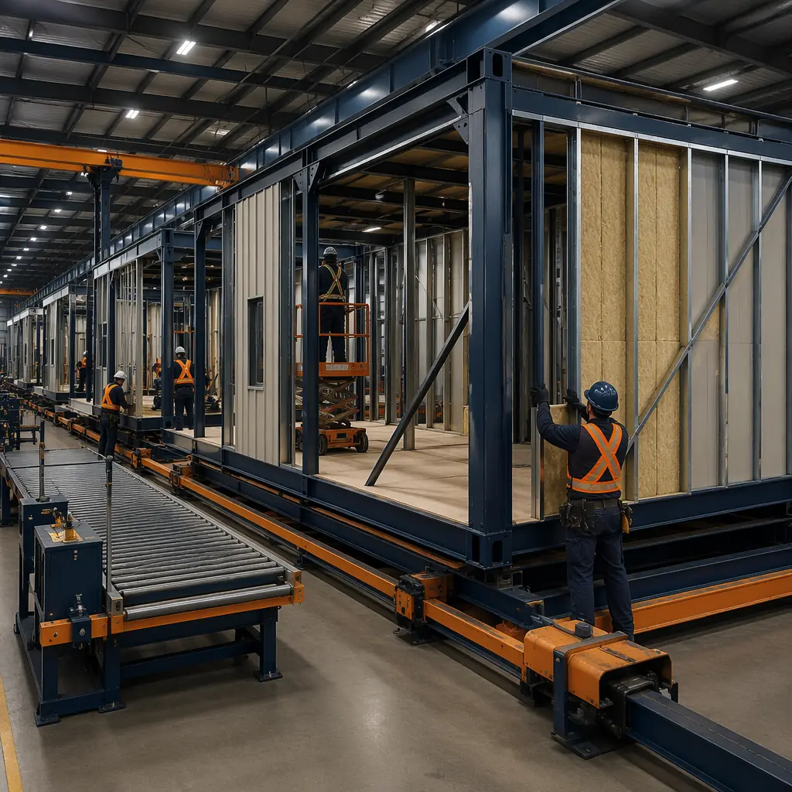
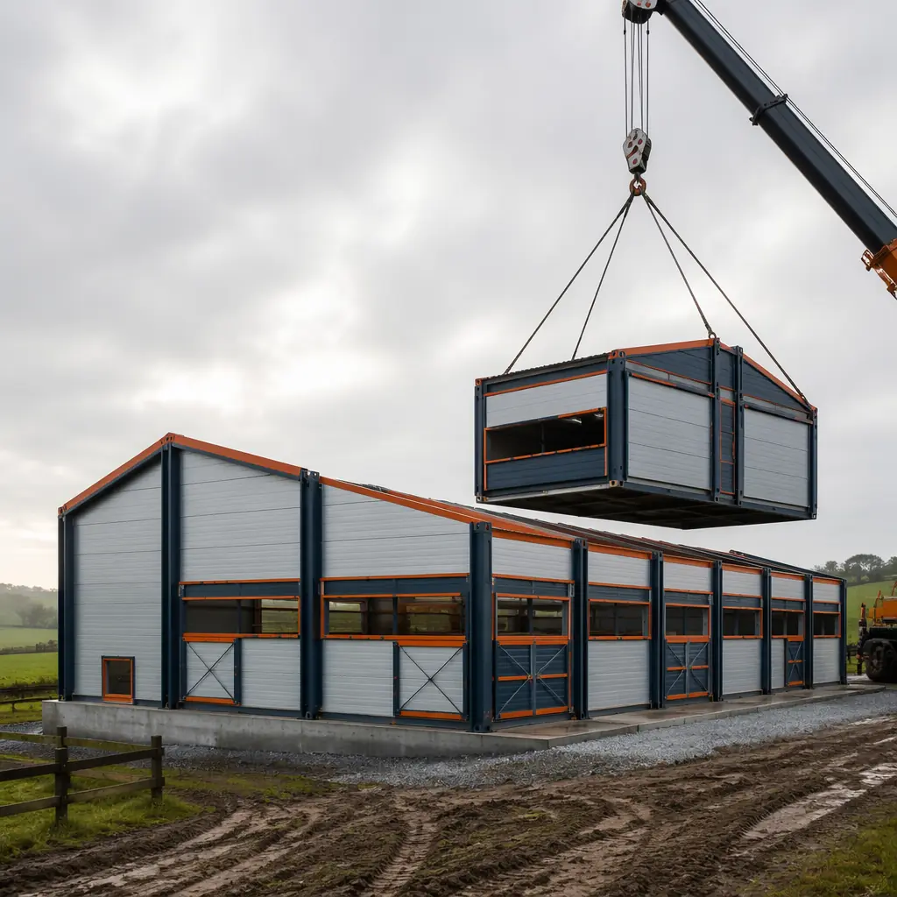
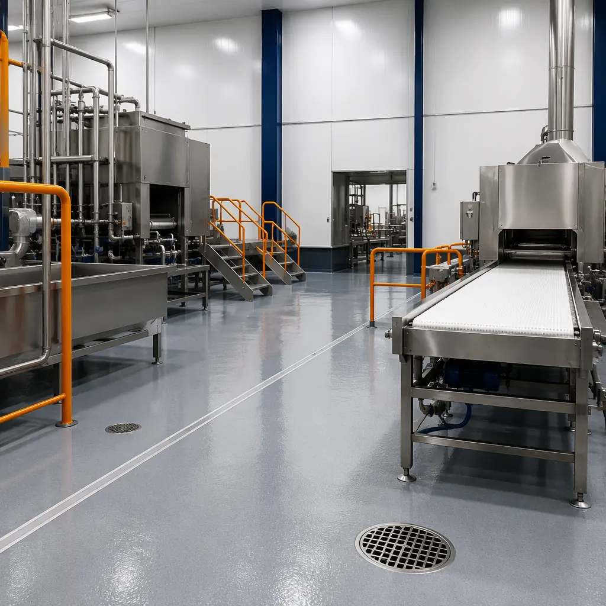
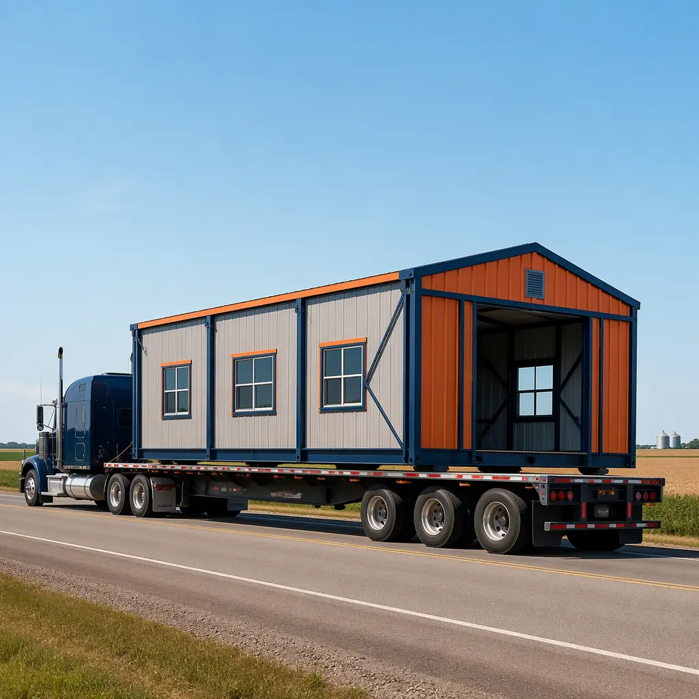

Agriculture doesn't wait for construction seasons. A dairy expansion delayed by six months of site work means six months of lost milk revenue. A grain storage shortage during harvest forces distressed sales at spot-market lows. Food processors losing a key contract because their facility expansion runs 18 months instead of the promised 10 — these are real costs that modular construction eliminates by moving 80–90% of building work into a factory. For farm operators and agribusiness developers evaluating their next build, modular construction offers timeline compression, cost predictability, and compliance pathways that conventional stick-built methods cannot match.

Why Traditional Agricultural Construction Falls Short
Conventional agricultural construction faces three structural problems that factory-built methods solve:
Weather dependency. A stick-built dairy barn in the Midwest loses 30–45 days per year to rain, snow, and frozen ground. Foundation pours delayed by frost. Framing stopped by thunderstorms. Roofing impossible in high winds. Modular construction reduces on-site weather exposure from months to weeks — the module arrives with roof, walls, MEP rough-in, and interior finishes already complete. On-site work is limited to foundation prep, module setting, and utility tie-in.
Skilled labor shortages. Rural construction sites face acute labor constraints. The USDA reports that 74% of agricultural contractors cannot find enough skilled carpenters and electricians within a 50-mile radius of rural project sites. Modular manufacturing concentrates skilled labor in a single factory, where the same crew that built last month's apartment modules can build this month's poultry processing wing — same steel frame, same wall panels, same quality control stations. For more on how factory precision translates across building types, see our guide to modular building design flexibility.
Cost overruns. Agricultural construction budgets are notoriously fragile. A 90-day weather delay adds carrying costs, extended equipment rentals, and often triggers loan covenant issues. Conventional agricultural buildings average 18–22% budget overrun according to industry data. Modular construction, with its fixed factory pricing and compressed site timeline, typically delivers within 3–5% of the contracted price. The cost-per-square-foot economics are detailed in our 2026 modular construction pricing guide.

Agricultural Building Types That Benefit from Modular Construction
Not every farm structure is a candidate for modular delivery. The method works best where there's repetition, controlled environments, and a clear ROI case for speed. Here are the agricultural building types seeing the highest adoption rates:
| Building Type | Module Size Range | Timeline vs Conventional | Key Advantage |
|---|---|---|---|
| Dairy barns | 14′ × 60′ per module | 40% faster | Factory-installed milking parlor MEP |
| Poultry houses | 12′ × 50′ per module | 45% faster | Pre-installed ventilation & biosecurity |
| Swine farrowing facilities | 12′ × 40′ per module | 40% faster | Controlled-environment integration |
| Greenhouse support buildings | 10′ × 40′ per module | 35% faster | Headhouse, packing, office in one delivery |
| Grain storage & equipment sheds | 16′ × 80′ clear-span | 50% faster | Large clear-span modules, no interior columns |
For operations requiring temperature-controlled environments, modular cold storage is a natural complement to these buildings. See our detailed coverage of modular cold storage construction for food, pharma and logistics.

Food Processing Facilities — The Highest-Stakes Agricultural Build
Food processing represents the most demanding category of agricultural construction. A USDA-inspected meat processing facility, a CFIA-compliant dairy plant, or an SQF-certified produce packing house must satisfy overlapping regulatory frameworks that govern everything from wall surface porosity to drainage slope to HVAC filtration. Modular construction addresses these requirements in a controlled factory environment where inspection happens at every workstation — not once at final walkthrough.
Regulatory compliance built in, not bolted on. Food processing facilities under USDA FSIS jurisdiction require walls that are smooth, non-absorbent, and cleanable to 8-foot height. Floor drains must slope at 1/4 inch per foot. Overhead piping must be accessible for cleaning. These are precise specifications that factory fabrication achieves with ±2mm tolerance — the same tolerance MODURA applies across our 4,000-module annual production capacity. Our guide to modular industrial and warehouse construction covers the factory-quality-control methodology that applies equally to food-grade environments.
Hygienic zoning through modular separation. A well-designed food plant separates raw receiving from processing, processing from packaging, and packaging from finished goods storage — each with its own air pressure cascade and personnel hygiene protocols. Modular construction makes this zoning physically intuitive: each zone is a discrete module or module cluster, with factory-installed wall penetrations sized exactly for the MEP pass-throughs required. No field-cutting of walls. No compromised fire ratings from after-the-fact utility routing.
| Compliance Standard | Jurisdiction | Modular Advantage |
|---|---|---|
| USDA FSIS 9 CFR 416 | United States | Factory-installed FRP wall panels, cove base, NSF-certified drains |
| CFIA SFCR | Canada | Pre-engineered washdown zones with factory-sloped floors |
| SQF / BRCGS | Global | Controlled factory conditions eliminate on-site contamination risk |
| EU Reg 852/2004 | European Union | HACCP-compliant module design with documented material traceability |
Key decision point: If your food processing expansion requires HACCP certification, modular construction reduces the certification timeline by allowing pre-inspection of modules at the factory — before they ever reach the site. Regulators can walk the modules under factory lighting, review documentation at a conference table, and sign off on 80% of compliance items before ground is broken. This alone can save 6–10 weeks versus conventional on-site inspection workflows.
Cost Structure — What Modular Agricultural Buildings Actually Cost
Agricultural construction budgets run on razor-thin margins. A dairy operator cannot absorb a 20% overrun the way a commercial office developer might — the milk check won't stretch. Here are the real cost drivers for modular agricultural buildings, benchmarked against conventional stick-built equivalents for the same program:
| Cost Category | Modular ($/sq ft) | Conventional ($/sq ft) | Modular Saving |
|---|---|---|---|
| Dairy barn (basic shell) | $85–110 | $95–130 | 10–15% |
| Food processing (USDA grade) | $210–280 | $260–350 | 18–22% |
| Poultry house (tunnel-ventilated) | $70–90 | $80–105 | 12–15% |
| Equipment shed / grain storage | $45–65 | $55–80 | 18–20% |
These figures represent the constructed cost (materials, labor, factory overhead, transport, and on-site assembly) for mid-size projects in the 10,000–50,000 square foot range. The gap widens for food-grade facilities because factory-controlled finishing eliminates the single largest cost risk in conventional food plant construction: rework after failed inspection. For a broader framework on evaluating modular construction investment returns, see our developer's guide to modular construction ROI.

Timeline Compression — The Real Payback for Agribusiness
In agricultural construction, speed isn't just about saving general conditions costs. It's about capturing revenue that would otherwise be lost to conventional construction timelines. Consider a 200-head dairy expansion with projected annual milk revenue of $1.2 million:
- Conventional timeline: 10–14 months (design through first milking)
- Modular timeline: 6–8 months
- Revenue captured by modular: $400,000–$800,000 in milk sales during the 4–6 month gap
This is not theoretical. The parallel-workflow advantage of modular construction — site work and factory fabrication happening simultaneously — is the same mechanism that delivers 50% timeline compression in healthcare and 60% in hospitality. For the agricultural sector, the mechanism is identical: foundation and utilities proceed on site while modules are being manufactured 500 miles away in a controlled factory environment. When modules arrive, they're set and connected in days, not months.
The energy efficiency implications of this compressed schedule extend into operations. Factory-built modules achieve tighter envelope sealing than field construction can reliably deliver — particularly important for climate-controlled livestock housing and cold-chain processing facilities. Our analysis of modular building energy efficiency shows 30–50% operating cost reduction versus conventionally built equivalents across multiple building types.

Financing Agricultural Modular Projects
Agricultural construction financing has its own ecosystem — USDA Farm Service Agency loans, Farm Credit System lenders, and state-level agricultural development programs. Modular construction qualifies for all of these, but the financing structure benefits from modular's compressed timeline in specific ways:
USDA FSA guaranteed loans require construction to be completed before the guarantee converts to a permanent loan. A 14-month conventional build means 14 months of construction-loan interest (typically prime + 2–3%). A 7-month modular build means half the interest carry, and the guarantee converts faster — releasing the lender's capital reserve requirement sooner. For detailed guidance on financing structures, see our complete guide to modular construction financing.
USDA REAP grants (Rural Energy for America Program) cover up to 25% of total project cost for energy-efficient agricultural buildings. Modular construction's tighter envelope performance provides stronger REAP application data — documented factory blower-door test results, rather than estimated post-construction performance. A 50,000 sq ft poultry house with factory-documented R-30 walls and R-40 roof typically qualifies for the maximum REAP grant allocation.
New Markets Tax Credits apply when food processing facilities are located in qualified low-income census tracts — which describes a large portion of rural America. Modular construction's fixed-price contracting simplifies the NMTC allocation process by eliminating the contingency-line-item disputes that plague conventional construction NMTC closings.
Fire Safety and Biosecurity in Agricultural Facilities
Agricultural buildings present unique fire safety challenges: combustible dust from grain handling, ammonia-based refrigeration systems in food processing, and high-density livestock populations where evacuation is not feasible. Modular construction addresses these through factory-installed fire-rated assemblies that are documented and tested before they leave the factory floor. See our comprehensive coverage of modular construction fire safety and compliance for the technical details on fire-rated wall assemblies, sprinkler integration, and smoke control.
Biosecurity — the prevention of disease introduction into livestock facilities — is another dimension where factory construction excels. Modules arrive with sealed interiors that haven't been exposed to construction-site dust, bird droppings, or rodent traffic. The Danish entry system (clean/dirty line with bench separation) can be factory-installed as a discrete module, tested for pressure differential, and delivered to site as a certified biosecure unit.
Is Modular Right for Your Agricultural Project?
Modular construction isn't the answer for every farm building. A 2,000 sq ft pole barn for hay storage doesn't need factory precision. But if your project checks three or more of these boxes, modular deserves a serious look:
- Timeline pressure — you're losing revenue every month the facility isn't operational
- Regulatory complexity — USDA, CFIA, SQF, or HACCP compliance is required
- Climate-controlled interior — livestock housing, cold storage, or processing environments
- Remote location — skilled construction labor is scarce within 50 miles
- Repeatable design — you're building multiple similar facilities or planning future expansion
- Fixed budget with no tolerance for overruns — factory pricing eliminates weather and labor contingencies
MODURA has delivered over 500 projects across 18 countries, with a combined annual production capacity of 4,000 modules from four factories on three continents. Our ISO 9001 and ISO 14001 certified manufacturing process applies the same ±2mm tolerance and workstation-level quality inspection to every module — whether it's destined for a hospital wing in Singapore or a dairy expansion in Wisconsin. If you're evaluating your next agricultural build, we can provide a preliminary timeline and budget based on your specific program requirements.